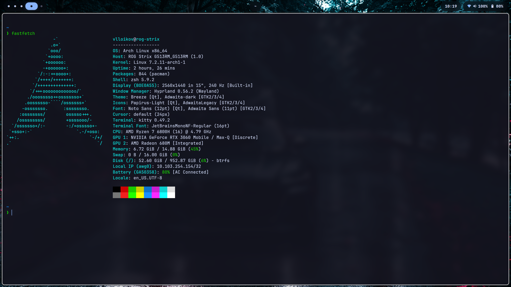
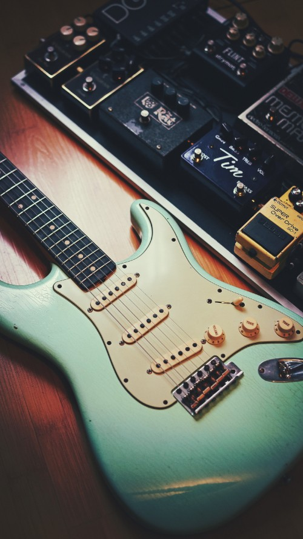

Чем я интересуюсь
-
Программирование
- Алгоритмы и структуры данных на Kotlin.
- Работа с данными на Python.
- Настройка Arch Linux и окружения Hyprland.
О применении этих навыков я рассказываю в разделе «Учебные проекты».

Моё рабочее окружение Arch Linux. Нажми на снимок, чтобы открыть его в полном размере. -
Музыка
Мне нравится играть на гитаре.

Гитара и оборудование для работы со звуком. -
Спорт
Одно из моих любимых занятий — катание на коньках.
Подготовка к катанию на коньках.